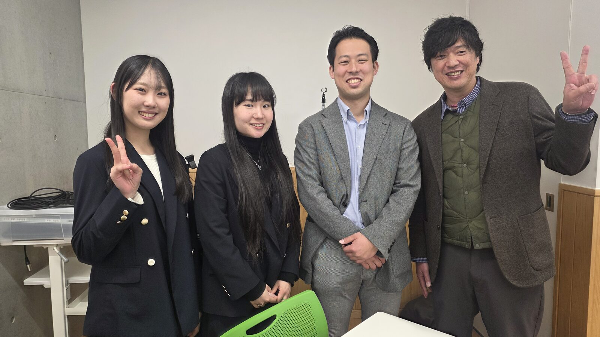
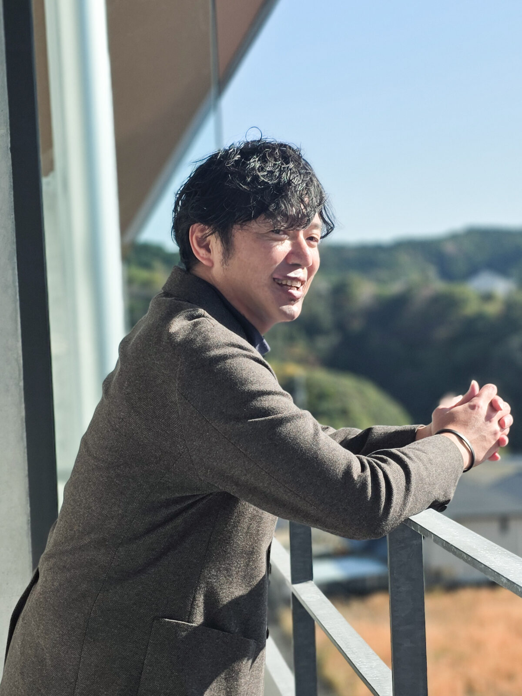
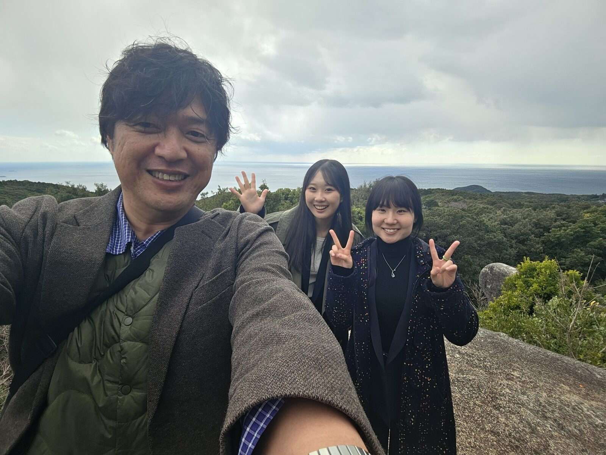
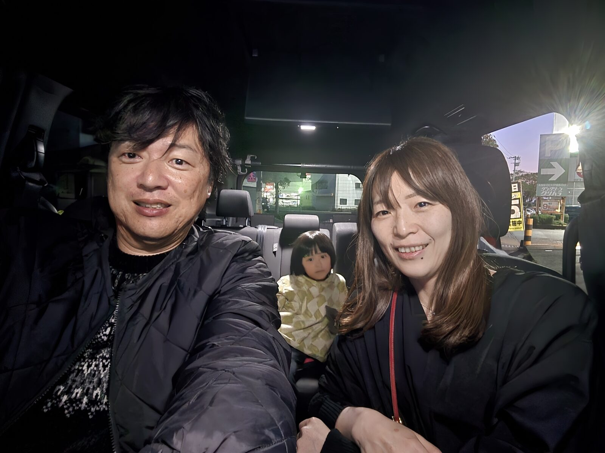
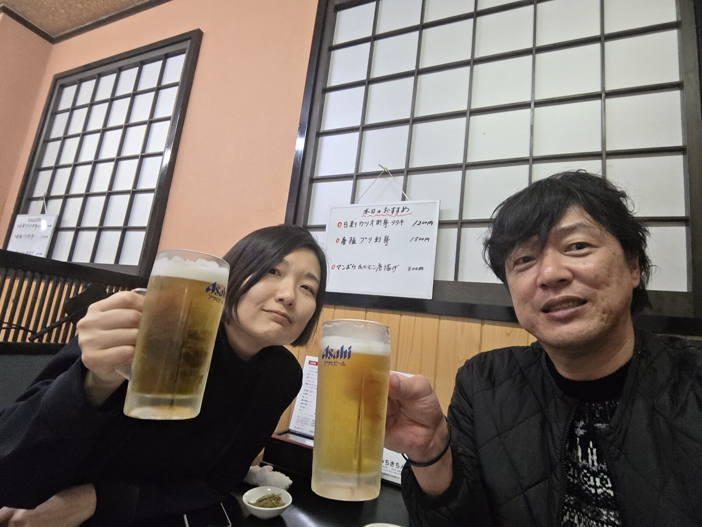
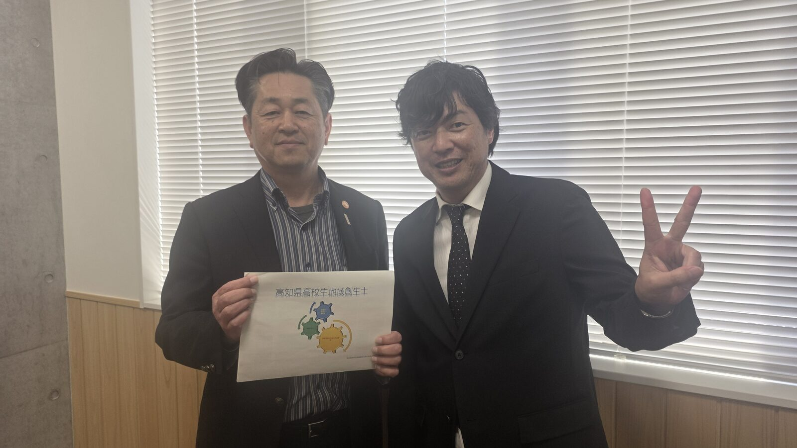
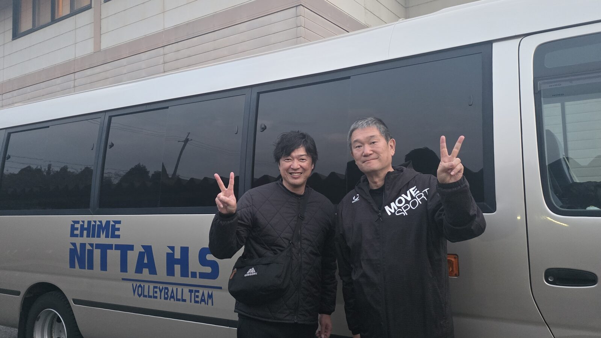

No.001

谷村一成
NPO法人みんなの進路委員会 代表
見えていない世界へ踏み出すことも、進路選択のひとつ。
「オレか、オレ以外か」じゃない。
オレ以外は、みんな先生だった。
だから、会いにいく。
生き方を聴き、そして自分の言葉で語る。
聴くことで、自分が変わる。
語ることで、誰かの人生が変わる。
これは、自分と、誰かの生き方に向き合う旅だ。
学びの編集者／高知県の高校教師
探究型の学びを実践しながら、答えのない問いを問い続けている。
理科・地学の教員として、正解のない問いから学びをつくる探究型の授業を実践している。
同じように、バレーボール・ビーチバレーボールの指導を通して、挑戦することそのものから成長する力を育てる。
「このままでいいのか？」という問いを持ち続けながら、
人と出会い、問いを深め、語り続けている。
聴くことで、自分が変わる。
語ることで、誰かの人生が変わる。

※ あなたもこの中の一人かもしれません
まずは、会って話を聴かせてほしい。そこからすべてが始まります。遠くても、近くても、タイミングが合えばどこへでも会いにいきます。
特別な準備はいりません。雑談でも大丈夫です。ほんの少し時間があれば、それだけで十分です。あなたのこれまでや今考えていることを、気軽に聴かせてください。
挑戦や転機、迷いも含めて、その人の生き方をその人の言葉で聴きたい。オレ以外はみんな先生だと思って向き合います。
一方的に聴くだけでなく、問いを行き来しながら一緒に考える。対話の中で、新しい視点や気づきが生まれる時間をつくります。
聴くだけでなく、自分の言葉でも語る。その往復の中で、互いの問いを深めていきます。
対話・講演・教育・スポーツ指導を通して、学びや生き方に向き合う時間をつくります。
1対1や少人数での対話を通して、その人の中にある「まだ言葉になっていないもの」に触れていきます。問いを行き来しながら、考えや迷い、これまでの経験をほどき、自分自身の言葉として立ち上げていく時間です。
教育・生き方・挑戦をテーマに、実践や出会いをもとに講演を行います。答えを伝えるのではなく、聴いた人それぞれの中に問いが立ち上がる時間をつくります。ご希望のテーマや場に合わせて、内容を一緒に組み立てていきます。
理科・地学の学びや探究型授業の実践を通して、知識を「自分ごと」に変えていきます。知識を伝えるのではなく、双方向のやりとりから学びを創り、問いから学びを深めていく授業をつくっていきます。
バレーボール・ビーチバレーボールの指導を通して、挑戦することそのものから成長する力を育てていきます。技術だけでなく、目や身体、思考の使い方に意識を向けることで、普段の練習の見え方そのものを変えていきます。
南海トラフ地震をはじめとした防災について、仕組みやリスクを伝えるだけでなく、「自分はどうするのか」を考える問いとして届けます。学校・地域・講演など、場や対象に応じて内容を組み立てながら、知識を行動につなげていく時間をつくっていきます。
高知といえばお酒。
飲みの場も、立派な対話の場です。
かしこまった場では出てこない言葉や、本音がふとこぼれる。
そんな時間を、一緒に楽しくつくれたらうれしいです。
※飲み会要員、大歓迎。
一人ひとりの人生の選択や言葉が、このプロジェクトを前に進めています。


.jpg)




講演・対話・授業づくり・コーチングなど、場や目的に応じて一緒に形をつくっていくことができます。
「こんなことできるかな？」くらいの段階でも大丈夫です。まずは対話の中で、一緒に考えていけたらうれしいです。
教育・生き方・挑戦などをテーマに、その場に合わせて一緒に内容をつくります。
個人・少人数での対話を通して、考えや問いを深める時間をつくります。
探究的な学びや授業づくりについて、現場に合わせて一緒に設計していきます。
「こんなことできる？」という相談からでも大丈夫です。
※ 基本的にはお互いノーギャラでやっていますが、交通費等をご負担いただける場合はとても助かります。
このプロジェクトは、出会いから始まります。
雑談でも、少しの時間でも大丈夫なので、少しでもお話しできたらうれしいです。
あなたのこれまでや、いま考えていることを、気軽に聴かせてください。
遠くても、近くても、タイミングが合えば会いにいきます。
「会ってもいいよ」
「少し話してみたい」
その一言をもらえたら、うれしいです。
こちらから日程などご相談させていただきますので、気軽にご連絡ください。
※ Googleフォームが開きます
基本的にはお互いノーギャラでやっています。
ただ、高知の西の端にいるので、移動にどうしてもお金がかかります。
交通費を出していただける機会があれば、めちゃくちゃうれしいです。
もちろん、なくても行きます。
そして、もし何かいただけるものがあれば、遠慮なく受け取ります（笑）